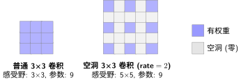
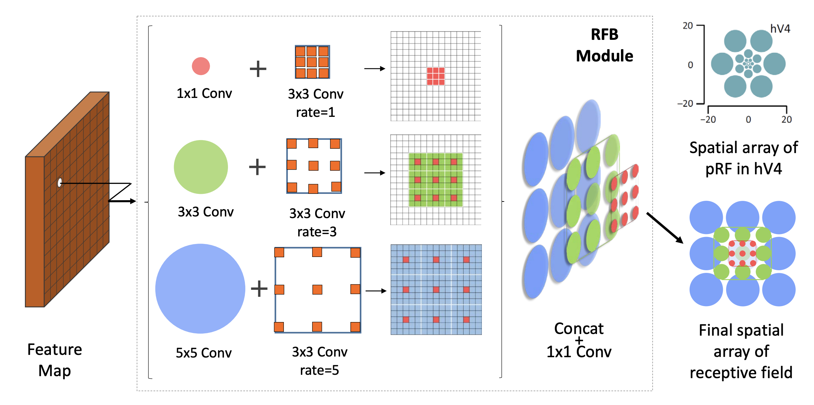

Inception：多尺度感受野的探索#
LeNet-5架构详解中我们学习了经典的 CNN 架构——卷积层堆叠，感受野逐层扩大。但这里有一个隐藏假设：所有特征都需要相同大小的感受野。
仔细想想，这个假设并不成立：
识别一只蚂蚁，只需要看局部几个像素（小感受野）
识别一头大象，需要看到整个身体结构（大感受野）
一张图片里可能同时有蚂蚁和大象
感受野告诉我们，感受野随深度增加而扩大。但问题是——每一层只有一个固定大小的感受野。如果第3层的感受野是 5×5，那它就只看 5×5 的区域，不管这个区域里的是蚂蚁还是大象。
能不能让网络同时拥有多个大小的感受野，然后自己选择用哪个？这就是 Inception 的核心洞察。
固定感受野的困境#
想象你在看一张照片：
用放大镜（小感受野）：能看清蚂蚁的触角细节，但看不到大象的全貌
用广角镜（大感受野）：能看到大象的轮廓，但蚂蚁只是一个模糊的点
传统的 CNN 就像一台固定焦距的相机——要么一直用放大镜，要么一直用广角镜。无论哪种选择，都会丢失另一种尺度的信息。
从信息论的角度看，这就是信息瓶颈问题：
小卷积核（3×3）：丢失了大于 3×3 的结构信息
大卷积核（5×5或更大）：丢失了精细的空间细节，还增加参数量
有没有办法同时保留不同尺度的信息？
Inception 的解决方案：多分支并行#
Inception（GoogLeNet）[SLJ+15] 的解决方案非常直接：不要选择，全都要。
在每个 Inception 模块中，输入同时通过多个分支处理：
四个分支并行工作：
分支 |
卷积核 |
感受野 |
捕捉什么 |
|---|---|---|---|
1×1 |
1×1 |
1×1 |
逐像素的精细特征 |
3×3 |
3×3 |
3×3 |
局部边缘、纹理 |
5×5 |
5×5 |
5×5 |
更大的部件结构 |
池化 |
3×3 |
可变 |
平滑后的显著特征 |
最后把四个分支的输出在通道维度拼接——相当于同时保留了四种"焦距"的信息，让网络自己学习什么时候用哪个。
1×1 卷积的智慧：降维与信息压缩#
如果你细心算一下参数量，会发现一个问题：
输入：256 通道
3×3 卷积输出 256 通道：参数量 = 256 × (3×3×256) ≈ 590K
5×5 卷积输出 256 通道：参数量 = 256 × (5×5×256) ≈ 1.6M
四个分支加起来，参数量爆炸了！
Inception 的第二个洞察：先用 1×1 卷积降维，再上大卷积核。
1×1 卷积的作用：
降维：256 通道 → 64/96/16 通道，大幅减少后续计算
跨通道信息融合：每个 1×1 卷积核看所有通道，学习通道间的组合关系
增加非线性：1×1 卷积后接 ReLU，在不增加感受野的情况下提升表达能力
这个设计后来被许多后续架构采用，成为降维与特征融合的标准技巧。
信息论视角——为什么要"全都要"#
为什么 Inception 坚持"不要选择，全都要"？这背后有一个深层的信息论原理。
从"筛子"说起#
想象你有一堆混合的沙子、石子和石块，需要把它们分类：
小筛子：能筛出细沙，但石子和石块都留在上面
大筛子：能筛出细沙和石子，但石块留在上面
无论用哪种筛子，你都会漏掉一些东西
卷积核就像筛子：
小卷积核（3×3）：只捕捉局部细节（纹理、边缘），看不到更大结构
大卷积核（5×5）：能捕捉更大结构，但会模糊掉细节
图像中的"频率"#
图像里其实藏着不同"粗细"的信息：
信息类型 |
类比 |
用什么捕捉 |
|---|---|---|
细节（高频） |
蚂蚁的触角、树叶的脉络 |
小感受野（3×3） |
局部结构（中频） |
车轮、窗户、眼睛 |
中等感受野（5×5） |
整体布局（低频） |
天空、草地、建筑物的轮廓 |
大感受野或池化 |
关键洞察：如果只用一种卷积核，就像只用一种筛子——总会漏掉某些信息。
Inception 的信息保留策略#
Inception 的多分支设计，相当于同时用多个筛子筛选：
小卷积核保留细节信息
中等卷积核保留局部结构
大卷积核保留整体布局
最后把所有结果拼在一起——没有信息被丢弃
用更专业的术语说，这就是最大化输入与输出的互信息——让网络尽可能多地保留原始图像的信息。单分支会"丢失"某些尺度的信息，而多分支确保了每个尺度都有专门的通道来处理。
为什么这比单分支更好？#
假设图片里有一只猫：
只看胡须细节（小卷积核）：你知道这里有东西，但不知道是什么
只看整体轮廓（大卷积核）：你知道这是一个动物，但看不清细节
两者结合：你同时知道"这是猫"（轮廓）和"猫有胡须"（细节）
Inception 让网络同时掌握多个尺度的信息，就像人眼看东西时既看到整体又看清细节一样。
历史背景：2014 年的突破#
Inception（GoogLeNet）由 Google 团队于 2014 年提出[SLJ+15]，是 ImageNet 2014 的冠军：
模型 |
年份 |
层数 |
参数量 |
ImageNet Top-5 错误率 |
|---|---|---|---|---|
AlexNet |
2012 |
8 |
60M |
16.4% |
VGG-16 |
2014 |
16 |
138M |
7.4% |
GoogLeNet |
2014 |
22 |
6.8M |
6.7% |
注意参数量：GoogLeNet 只有 6.8M 参数，是 VGG 的 1/20，但性能更好。这证明了精巧的结构设计比暴力堆参数更有效。
局限与演进#
Inception 虽然强大，但也有一些局限：
结构复杂：需要手工设计每个分支的通道数
超参数多：降维到多少通道？几个分支？需要反复实验
训练困难：22 层在当时已经是深层网络，优化有挑战
这些挑战促使研究者探索更简洁高效的设计。但 Inception 的核心思想——多尺度处理——从未过时，而是以新的形式不断演进：
空洞卷积（Atrous Convolution）：不增加参数就能扩大感受野，是 Inception 多尺度思想的另一种实现
EfficientNet：复合缩放（深度、宽度、分辨率）+ 移动版 Inception 模块
RFB Net [LHW18]：用空洞卷积模拟人类视觉皮层的感受野结构
RFB Net：向生物视觉学习#
RFB（Receptive Field Block）Net [LHW18] 是 Inception 思想的延伸，但更进一步——它不只是"多个固定大小"，而是模拟人类视觉皮层的感受野分布。
人类视觉有个特点：
中央凹（fovea）：视野中心，感受野小、密度高、分辨率精细
周边视觉：视野边缘，感受野大、密度低、分辨率粗糙
空洞卷积：不增加参数就能看更远
在介绍 RFB 之前，我们需要先理解空洞卷积（Dilated/Atrous Convolution）——一种在不增加参数量的情况下扩大感受野的技术。
核心思想：在卷积核的像素之间插入"空洞"（零），让卷积核能覆盖更大的区域，而实际的参数量不变。

普通 3×3 卷积：看 3×3 = 9 个像素，感受野 3×3
空洞 3×3（rate=2）：在像素间插入 1 个空洞，实际看 5×5 = 25 个像素，感受野 5×5，但参数量仍是 9！
这就像用稀疏的网捕鱼——网眼变大（空洞），覆盖范围变广，但网的"线"（参数）数量不变。
RFB 用空洞卷积实现人类视觉的分布：
小卷积核 + 小空洞率（rate=1）：中心密集采样
中等卷积核 + 中等空洞率（rate=3）：中间区域中等密度
大卷积核 + 大空洞率（rate=5）：外围稀疏采样
{kind=link}

RFB 模块结构：三个分支并行，分别使用不同大小的初始卷积（1×1、3×3、5×5）配合不同空洞率的 3×3 卷积（rate=1、3、5），最后拼接并通过 1×1 卷积融合，形成多尺度感受野。图片来自 RFB Net 论文。#
空洞卷积的妙处：
普通 5×5 卷积：看 5×5 = 25 个像素，参数量 25
空洞 3×3（rate=2）：看 5×5 = 25 个像素，但参数量只有 9！
通过调整空洞率，RFB 可以在不增加参数量的情况下扩大感受野，同时保持 Inception 的多尺度特性。
RFB Net 在目标检测任务上取得了很好的效果，证明了生物视觉的启发依然是架构设计的重要源泉。
总结#
Inception 通过多分支并行让网络同时看到不同尺度的信息：
视角 |
核心洞察 |
实现方式 |
|---|---|---|
感受野 |
不同物体需要不同大小的感受野 |
1×1、3×3、5×5 卷积并行 |
信息论 |
多频段采样保留更完整信息 |
通道拼接，让网络自动选择 |
工程 |
降维减少计算，升维恢复表达能力 |
1×1 卷积压缩 → 大卷积核处理 → 通道拼接 |
Inception 的价值在于提出了问题：感受野应该多大？答案是——看情况，最好都有。
这个洞见在后续发展中不断被证实：无论是最新的 Transformer 还是 CNN，多尺度处理都是标配。
下一节ResNet：深层网络的突破，我们将学习深层网络的训练突破——从 22 层迈向 152 层的关键一跃。
参考文献
贡献者与修订历史
查看详细修订记录
-
d7c9da72026-05-12 - Heyan Zhu: docs: update sphinx only filter from not pdf to not latex -
a954ca52026-05-11 - Heyan Zhu: docs: revise and restructure documentation, fix formatting, and move env setup and sphinx guide to a separate appendix section -
2dc78ed2026-05-09 - Heyan Zhu: fix: address latex errors when building pdf -
f159d562026-05-08 - Heyan Zhu: fix: address complaints from the linter -
15d1b152026-05-03 - Heyan Zhu: docs(model-architecture-design): add new chapter on CNN architecture design methodology -
42a2ebc2026-05-02 - Heyan Zhu: feat(docs): add inception and resnet modules with related content